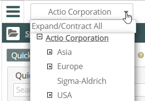
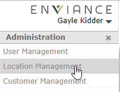
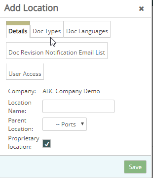
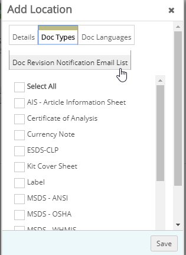

As a Vault administrator, you can create Vault locations and manage them.
To view the current Locations for your company, select the dropdown arrow from the Location button at the top of the page.

Click the dropdown arrow next to your name top right. Select Administration from the menu.
To create a new location:
From the Administration menu, select Location Management.

In the Manage Locations window, click Add a Location.
The Add a Location window displays.

On the Details tab, enter a name for location. The location name may contain up to 250 characters. Disallowed characters include: backslash ( \ ), quotation marks (" "), apostrophe ( ' ), slash ( / ), and hyphen ( -).
Note: Do not copy and paste a location name if the location name is part of a bullet line.
Choose a Parent Location.
For the first location, is Parent is your only choice. Otherwise, choose the parent location from the drop-list, the one you want as the next higher-up location.
(Optional) If you want to limit access to specified users, check the Proprietary Location box. The User Access tab will then be added for selecting the users.
For Proprietary Locations only: In the User Access tab, select the users you want to have access to the location from the Available SDS Vault Users and move them to the Selected Users with the arrow buttons. Only those selected users will be able to view SDS in that location and run reports for the location.
(Optional) Select the Doc Revision Notification Email List tab and specify the email addresses of the people or entities you want to send email to when a SDS revision is created in the location. See Notify Users of Document Revisions.
